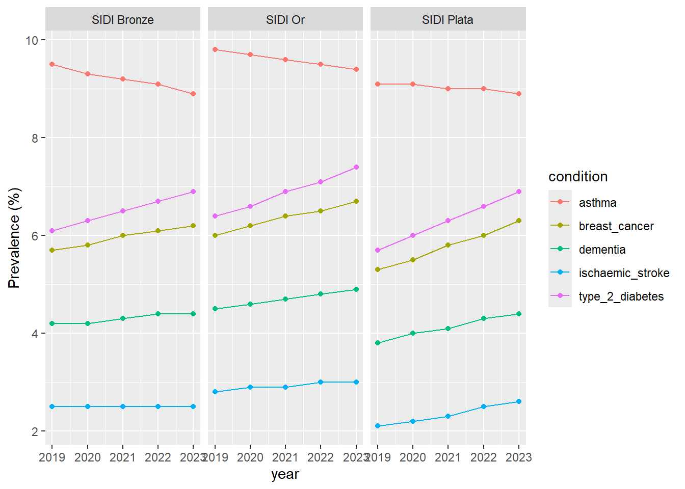
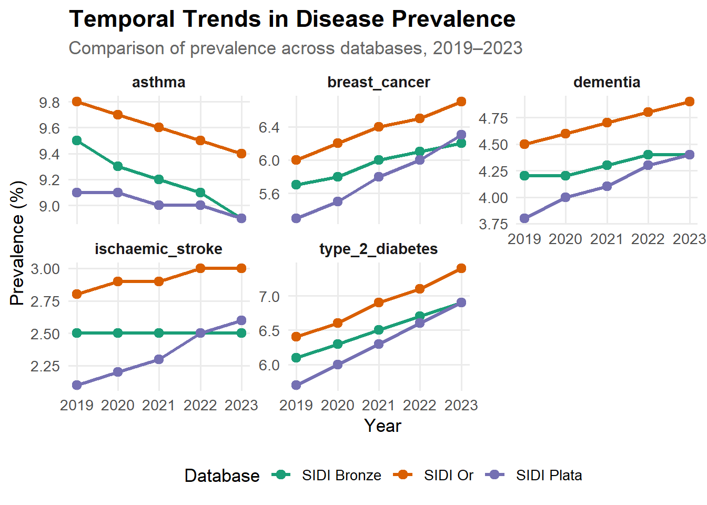
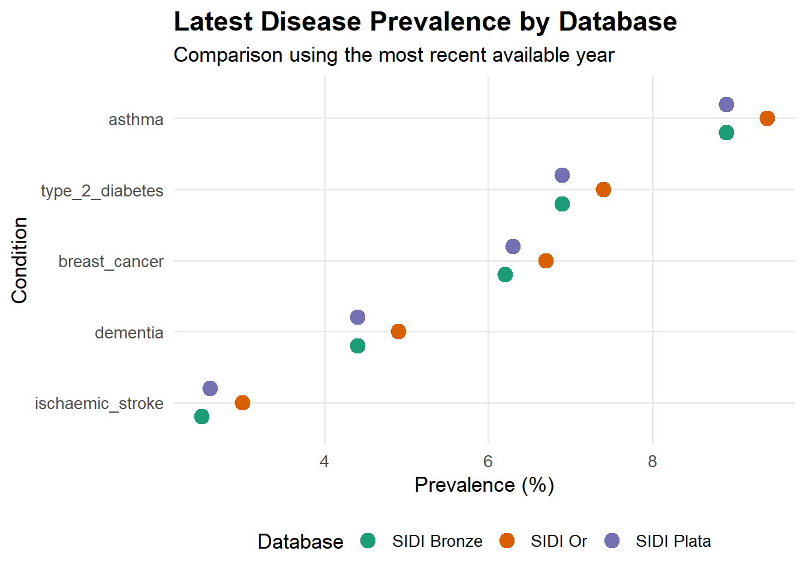
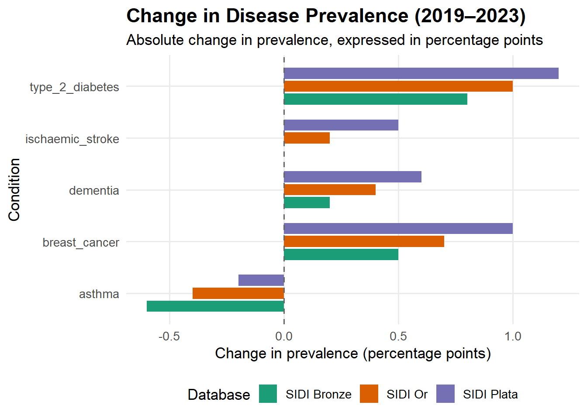

# A tibble: 6 × 4
database condition year prevalence
<chr> <chr> <dbl> <dbl>
1 SIDI Bronze asthma 2019 9.5
2 SIDI Bronze asthma 2020 9.3
3 SIDI Bronze asthma 2021 9.2
4 SIDI Bronze asthma 2022 9.1
5 SIDI Bronze asthma 2023 8.9
6 SIDI Bronze breast_cancer 2019 5.7OMOP Data Exploration
Initial Dataset Inspection
1. Introduction
This report explores the downloaded dataset to understand its structure, variables, completeness and basic characteristics.
2. Load the Dataset
3. Dataset Overview
| Metric | Value |
|---|---|
| Total Observations | 75 |
| Total Variables | 4 |
| Missing Values | 0 |
| Duplicate Rows | 0 |
4. Data Preview
| database | condition | year | prevalence |
|---|---|---|---|
| SIDI Bronze | asthma | 2019 | 9.5 |
| SIDI Bronze | asthma | 2020 | 9.3 |
| SIDI Bronze | asthma | 2021 | 9.2 |
| SIDI Bronze | asthma | 2022 | 9.1 |
| SIDI Bronze | asthma | 2023 | 8.9 |
| SIDI Bronze | breast_cancer | 2019 | 5.7 |
| SIDI Bronze | breast_cancer | 2020 | 5.8 |
| SIDI Bronze | breast_cancer | 2021 | 6.0 |
| SIDI Bronze | breast_cancer | 2022 | 6.1 |
| SIDI Bronze | breast_cancer | 2023 | 6.2 |
5. Variable Information
| Variable | Data_Type | Missing | Missing_Percentage | |
|---|---|---|---|---|
| database | database | character | 0 | 0 |
| condition | condition | character | 0 | 0 |
| year | year | numeric | 0 | 0 |
| prevalence | prevalence | numeric | 0 | 0 |
6. Numerical Summary
| Var1 | Var2 | Freq |
|---|---|---|
| year | Min. :2019 | |
| year | 1st Qu.:2020 | |
| year | Median :2021 | |
| year | Mean :2021 | |
| year | 3rd Qu.:2022 | |
| year | Max. :2023 | |
| prevalence | Min. :2.100 | |
| prevalence | 1st Qu.:4.200 | |
| prevalence | Median :6.000 | |
| prevalence | Mean :5.765 | |
| prevalence | 3rd Qu.:6.900 | |
| prevalence | Max. :9.800 |
7. Initial Findings
The dataset has been loaded and inspected. The summary tables provide an initial understanding of its dimensions, variable types, missing observations and numerical characteristics.
Further data cleaning and quality assessment can be conducted based on these findings.
New Plot

Box plot

Disease prevalence heatmap

year wise Prevalance
